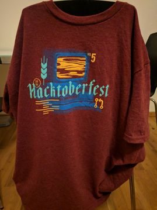

2018 was quite an eventful year in my life. This year went by even before I could realize it. Here are a few highlights of my life during 2018
Masters
Finally, I graduated from the University of Paderborn with a Masters degree in Computer Science 😌. Usually, it takes a normal human being ~2.5 years to complete it, but being the lazy sloth that I am, it took me 3. According to the German law, I can now prefix my name with an M.Sc 😉.
Berlin and New job
I moved to Berlin - the city that plays by its own rules in the month of August to pursue my career as a Go developer @ travel audience. IMHO I had messed up the interview pretty badly, but the interviewers found me good enough to be their colleague and lo and behold I moved to Berlin to start a new job. Living in Berlin was on my bucket list since the first time I visited it.
The similarities between Bangalore(my hometown) and Berlin are quite startling. For starters, both of them start with the letter B and are cosmopolitan cities. Both the cities host a lot of meetups. The food scene in both the cities is 🔥. Finally, both the cities have the “adjust maadi” attitude which I love.
Open Source contributions
Another item on my bucket list was contributing to open source projects on github. This year I participated in the hacktoberfest and contributed to many open source projects including the go plugin for vscode. I aim to continue contributing to open source projects in the coming years. Contributing to open source was enlightening both technically and personally. I also earned a couple of free 👕s for my contribs.

Travel
I couldn’t travel as much as I wanted to due to my master thesis, university courses and my new job. I made a couple of visits to Berlin before moving here. In the month of July, I visited India after successfully defending my master thesis. I just came back from a trip to Amsterdam 😉.
2019
My goals for 2019 include
- Be a better human being.
- Complete the Berlin half marathon.
- Give a talk at a conference/meetup.
- Contribute more to Open source.
- Travel more.
- Run more.
- Blog more 😅.
Tschüss 2018, you were amazing 🙏. Here is to you, 2019 🍻.